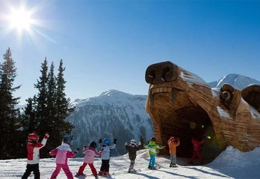
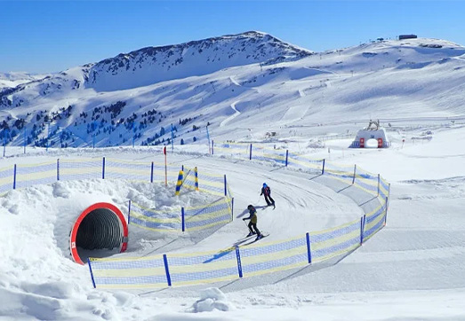
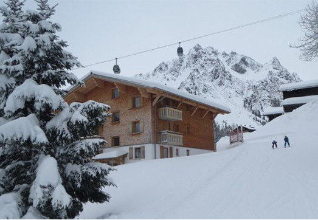

1. Serfaus
Het skigebied Serfaus is echt een paradijs voor kleine skiërs. Alles is hier gericht op kinderen, de pistes, skischolen en leuke speeltuinen.
Helemaal geweldig is als je hoort dat er zelfs speciale pistes opgericht zijn voor kinderen. Er bestaat een dierenpark, dinobos en indianenland. Voor onder de middag is het lunchen ook nog top voor je kind. Serfaus heeft namelijk speciale kinderrestaurants aan bod.
In Serfaus heb je genoeg familieactiviteiten beschikbaar. Je kunt Langlaufen, rodelen en sneeuwschoenwandelen.

2. Wildkogel Arena
Dit is misschien wel hét meest kindvriendelijke skigebied in Oostenrijk! Nadat je uit de gondel komt vanaf beneden, is daarboven een oefenweide waar de kleine kinderen kunnen leren skiën. Voor de ouders is dit heel fijn, want ze kunnen overdag zelf skiën en ook even kijken hoe je kinderen van de sneeuw genieten. Dit skigebied bestaat voor 85% uit makkelijke afdalingen (rode en blauwe pistes). In de buurt van dit gebied heb je ook nog leuke dorpjes met activiteiten beschikbaar!

3. Gargellen
Gargellen is een geschikte bestemming voor families en kinderen. Het gebied is niet zo groot, maar zo kun je als beginner makkelijk beginnen en leer je de pistes echt goed kennen. De pistes zijn breed, goed onderhouden en de dalafdaling is lang. Dit gebied is niet heel uitdagend en dus voor beginnende skiërs ideaal!
